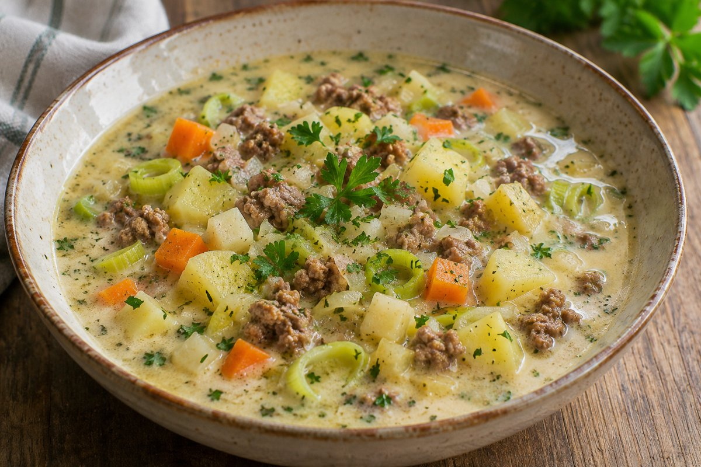

Kartoffel-Hack-Eintopf

Kartoffeleintopf mit Rindertatar, Karotten, Sellerie, Lauch und Kräuterfrischkäse für vier Portionen.
4 Portionen
Zutaten
- 700 g Kartoffeln
- 500 g Rindertatar
- 2 Karotten
- 1 kleines Stück Sellerie
- 1 Zwiebel
- 1 Stange Lauch
- 1,2 Liter Gemüsebrühe
- 1 Packung Balance-Kräuterfrischkäse
- 1 Handvoll Petersilie
- Salz, Pfeffer, Paprika, Muskat
Zubereitung
- Klein gewürfelte Kartoffeln, Karotten und Sellerie sowie Lauchringe mit der Gemüsebrühe in einen Topf geben.
- Aufkochen und ca. 12 Minuten köcheln lassen, bis das Gemüse weich wird.
- Währenddessen Rindertatar in einer Pfanne anbraten. Die gehackte Zwiebel dazugeben und mit Salz, Pfeffer und Paprikapulver würzen.
- Das angebratene Hackfleisch in den Suppentopf geben und alles gut verrühren.
- Frischkäse einrühren, bis sich alles gut verbunden hat. Petersilie unterheben und heiß servieren.
Nährwerte laut Quelle
Für den gesamten Topf: 1.360 kcal · 120 g Protein · 124 g Kohlenhydrate · 44 g Fett. Ungeprüfte Angaben aus der Quelle; keine Werte pro Portion.
Hinweise zur Quelle
Rezept nach dem bereitgestellten Screenshot der Instagram-Caption. Das Gewicht der Frischkäsepackung sowie die genaue Menge von Sellerie und Gewürzen sind nicht angegeben. Muskat ist in der Zutatenliste genannt, im Zubereitungstext aber keinem Schritt zugeordnet. Die ca. 12 Minuten beziehen sich auf das Köcheln des Gemüses; eine gesamte Koch-, Vorbereitungs- oder Gesamtzeit ist nicht angegeben und wurde nicht daraus abgeleitet.
Originalquelle: Instagram-Reel.